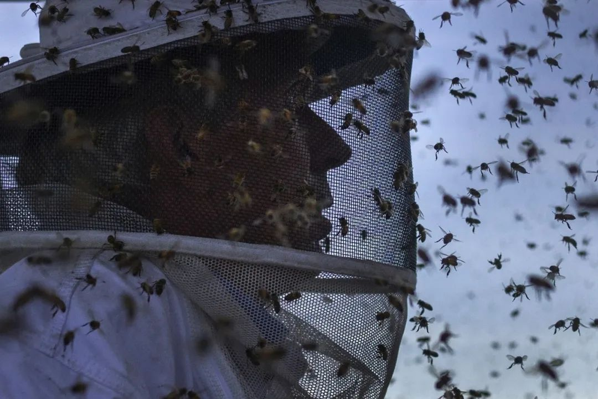
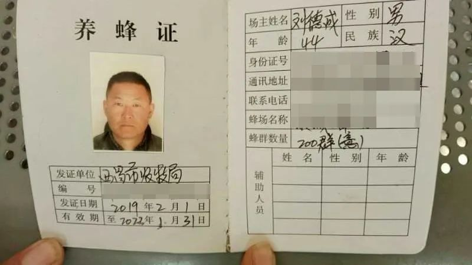
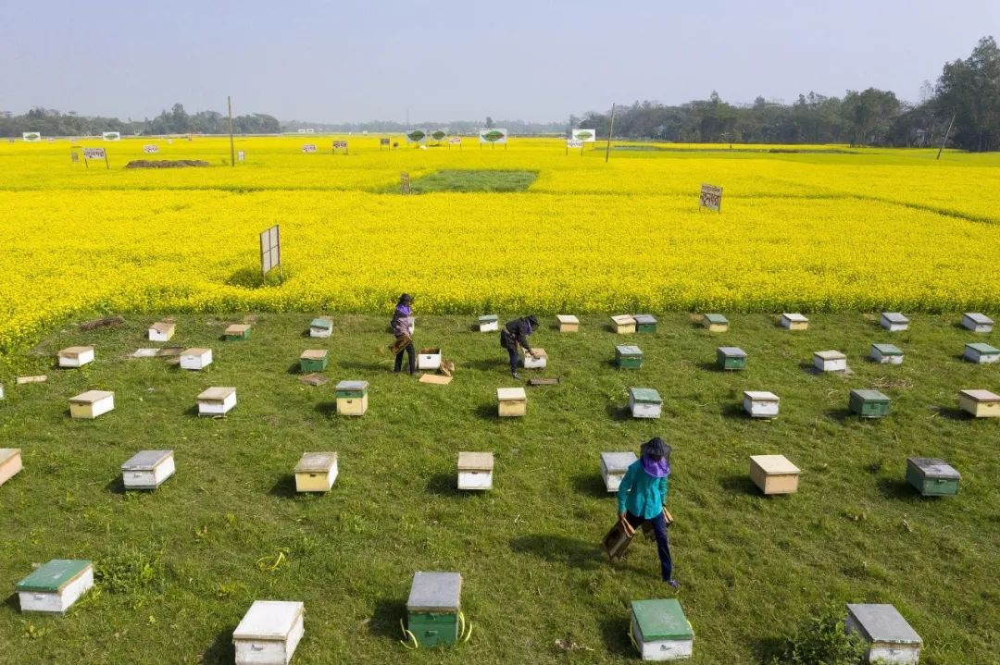
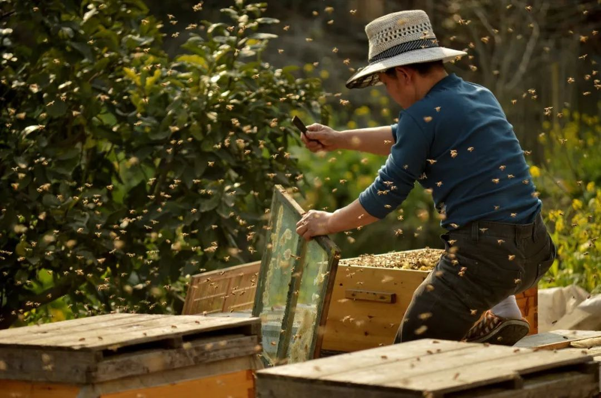

养蜂人上吊自杀，疫情中蜜蜂和蜂农的生死大考
原文链接 备份链接 作者：刘倩 来源：*商业人物*（ID：*biz-leaders）* 养蜂人刘德成死了。在他的蜜蜂因中毒、转场受阻大量死亡之后，于2月13日在云南上吊自杀。 他的死将蜂农这一群体带入大众的视线，也让人们知道新冠肺炎疫情影 …


2月3号，情势已经急转直下。刘德成发了一个朋友圈，说自己的蜜蜂中毒了。
在四川攀枝花繁蜂的徐仁柱看到后跟他聊了起来。那个晚上，刘德成告诉徐仁柱，从大年初三到现在，光是死去的蜜蜂，他就装了六七桶，都倒掉了，那是能装三四十斤水的大桶。“要疯了。”他向徐仁柱描述那些蜂子的惨状：“死得密密麻麻，都拖不出来。”
文 | 翟锦
采访 | 翟锦 王梓帆
编辑 | 金匝
运营 | 山山
这是养蜂人刘德成第一年带着蜜蜂在云南过冬。
以前他常在老家四川西昌繁蜂，这里油菜花茂盛。但后来，很多人不种油菜，改栽葡萄，花少。他听蜂友说云南不错，就去了。
养蜂人追着各地的花期跑，叫转场。一旦来年春暖花开，带着176箱蜜蜂，刘德成将会离开云南易门，转场到第一站四川绵阳。二三月份，那里有大片的油菜花，比腰还高，黄灿灿，蜜蜂一涌进去，就看不到影子。
四月份，一路西行，从四川来到甘肃天水，追逐油菜花、洋槐花和苜蓿花。洋槐花开的满树，攒在枝头，洋槐花蜜也是养蜂人卖得最好的蜂蜜。
接着，会历经定西、白银、武威。赶最后一个花期时，他会回到天水，在地图上绕完一个椭圆形，十一月左右，就再启程去云南，繁育蜜蜂，等待来年的花期。
只是今年，这场迁徙被疫情切断。因为新冠肺炎，在云南易门的他遇到村子封路，不能带着蜜蜂及时转场，饲料糖也运不进来，蜜蜂只能采食已经被打上农药的油菜花，一层一层的工蜂死去。
这期间，蜂螨又爆发了。给蜜蜂治螨时，刘德成用药狠了，不止是工蜂，小蜜蜂也长不出来了，蜂场已经完全崩溃，损失十几万。
2月13日，45岁的刘德成在养蜂的帐篷里用一条麻绳结束生命。他原本的176箱蜜蜂，最后只合并成36个残弱的蜂群。

▲刘德成的养蜂证 图 /网络
对刘德成来说，在云南易门，他原本要独自度过一个没有蜂蜜产出的时节。
前几年，刘德成的妻子还会跟着他一起去追花，后来，他的两个孩子大了，一个读高中，一个读初中，得有人照顾，妻子在老家的超市找了一份临工，就刘德成一个人带着蜜蜂四处迁徙。
秋冬是蜂王产卵、大量培育越冬蜂的关键时期，年龄大、身体差的蜂王被淘汰，引入新的优质蜂王，培育出壮蜂。即便是到了云南，比四川西昌的花要繁盛一些，食物还是不够，一定要有充足的饲料糖，喂给蜜源并不多的蜂群，以便它们安全越冬。
越冬期，养蜂人的一天多是如此度过：早上天蒙蒙亮起床，把饭煮上，一箱箱检查蜜蜂。秋冬是蜂螨高发期，得时刻注意除螨。等到蜜蜂飞出去，才能坐下吃饭。傍晚六七点，太阳落山，气温下降，蜜蜂自己飞回来，就要给它们喂糖水。
虽然没有蜂蜜产出，但对刘德成来说，这几个月仍然是充满希望的——蜂群正在积蓄力量，孕育新一年采蜜的主力。
今年1月底，甘肃天水的李志荣还给刘德成打过一个电话，他称呼刘德成“师父”。“等你转场到了绵阳，我就开车上来看你，咱们两个，我的车，你的蜂，我的蜂，一起拉走，我跟你好好地学几年，今年我们大干一场。”刘德成在那头还是高兴的样子，他告诉李志荣，2月20号就要带着蜜蜂到四川绵阳去，到时候给他打电话。
但2月3号，情势已经急转直下。刘德成发了一个朋友圈，说自己的蜜蜂中毒了。在四川攀枝花繁蜂的徐仁柱看到后跟他聊了起来。那个晚上，刘德成告诉徐仁柱，从大年初三到现在，光是死去的蜜蜂，他就装了六七桶，都倒掉了，那是能装三四十斤水的大桶。

▲2月初，刘德成拍视频给朋友看蜂箱和死掉的蜜蜂。图 / 受访者供图
徐仁柱感同身受。因为肺炎疫情，春节假期结束后，攀枝花的农民们没能像往常一样出去打工，在田地打农药打的很勤快，蜜蜂中毒比往年都厉害，以前打开蜂箱厚厚的都是蜜蜂，现在几乎可以见底——工蜂都死了，中毒后，蜂王也几乎都不兴奋，繁育不了。
攀枝花待不下去，徐仁柱就想办法往新都去赶花期。他拿着健康通行证，去往年待过的地方落脚，跟村长说好了自己隔离14天后再出门。但第二天，以前熟悉的村民就找到他的帐篷里去，赶他走，不走就砸蜂箱。“我说我已经走投无路，他们也不放过。我没办法，又到处求朋友收留。”最后还是一个蜂农朋友，把他的蜜蜂放在自己的蜂场养着。
刘德成所在的易门县只比这些更严重。村子封路，路上都设了卡，他找不到车，饲料糖进不来，他也出不去，即便是真能出去了，四川那边也不接收。
“但是你的蜂子在长的嘛。”徐仁柱安慰刘德成，效果甚微。刘德成告诉他，“要疯了。”他向徐仁柱描述那些蜂子的惨状：“死得密密麻麻，都拖不出来。”
聊天戛然而止，除了说一下各自的损失，他们没什么办法，也无法彼此安慰。
就在刘德成走后的第三天，2月15日，相关部门印发《关于解决当前实际困难加快养殖业复工复产的紧急通知》。其中把蜜蜂运输包括进去了。有了这份文件，转场放蜂的出口才逐渐开始打开。
养蜂人的生活充满不确定。
如果一年风调雨顺，蜜蜂在蜜源地吃得满足，产蜜也多；如果雨水天多，或是遇上“倒春寒”这样的极端天气，蜜源植物就会减少流蜜量，也会影响蜜蜂外出行动。
以为这儿的花期有两个月，可能20天就开完了，天太热，花早早开了就落，采不上蜜，那又得赶紧转移到下一个地方。
每一年都像开一场“赌局”，赌能不能挣上钱。
这不是刘德成第一次输掉“赌局”。2018年4月，甘肃遭遇低温冻害，刘德成当时和其他养蜂人一道在这里赶花期，气温突降，花粉受损，蜜蜂无蜜可采。
采不上蜜，蜜蜂只能吃白糖，一袋100斤的白糖当时涨到快400块，一花期得喂10多袋，再后来，那大半年，走西北花线，几乎沿路都要一直喂白糖，入不敷出，赔了好几万。
除了靠天吃饭，还得能掌握这门手艺。很多养蜂人都得跟着师父跑上四五年，才能独自上路。得摸清蜜蜂的习性，得会给蜜蜂治病。蜜蜂最常见也最危险的疾病就是蜂螨。螨病严重的蜂群，新蜂不能健康出生，成年蜂大批死亡，蜂群迅速削弱。
蜜蜂长了螨虫是看不出来的。对养蜂人刘德成来说，在云南易门时，每天最重要的事情之一就是检查蜂螨，把蜂箱的蜂巢脾（蜂巢脾是蜜蜂用蜂蜡修造的数千个巢房组成的）一个个提出来，看攀爬在上面的蜜蜂的翅膀，如果有蜜蜂的翅膀扭曲，被咬出一个洞，就是长了螨虫。
除螨，只能打药。螨虫药其实也是一种农药，打少了，蜂螨去不掉，打多了，就会把自己的蜂子毒死。因为每年蜂螨的情况不一样，只能自己估计药量，再熟练的蜂农有时候都会出错。
徐仁柱去年换了一种新的螨虫药，不晓得药性，打了一次没效果，还好转场后又补了一次，不然蜂子也会出大问题。
这一次，出错的是刘德成。在遭遇无法转场，蜜蜂中毒后，他的蜂群又因为治螨药打重了，成群地死，之前打开蜂箱还能看到活跃的蜜蜂，后来几乎看不到了。
过去一年里，生活的打击已经来得太频繁。
去年追花的时候，刘德成请了杨崇福帮忙。二月底，他们从四川西昌出发，去了绵阳追油菜花。杨崇福主要帮刘德成转场、做饭和照顾蜜蜂，一个月两千元，他觉得这工资太低了，别人都开三四千，五千的也有，他也问刘德成加过工资，刘德成说，“加不起来”。

▲油菜花盛开的时节，养蜂人在田间忙碌。图 / 视觉中国
杨崇福听了他的话，没再追问，他不想让中间介绍人为难，钱少些就少些。至于原因，他也能模糊猜到一些——他听说过刘德成家里人患病的消息。
去年七八月份的时候，刘德成的弟弟因为癌症去世，他把蜂场交给杨崇福看管，回去给弟弟办后事，半个多月后才回来。
刘德成到云南繁蜂后，还问过杨崇福要不要来帮忙。也是这次，刘德成才提起说，来年五月，等采了洋槐花之后，可能就把蜂子都卖了，回去照顾父亲——他父亲患了肾病，已经在做透析。
养蜂人刘德成，留下的痕迹并不多，外人只有在几个短视频里，才得以窥见他生活里的一些面貌。
在一个短视频平台上，刘德成超过半数的视频都是他在唱歌，戴着耳机，正对着屏幕，偶尔会边唱边转圈，可以看到他背后的帐篷、蜂箱，和空旷无物的四周。
在《朋友别哭》的前奏响起来时，刘德成不笑，嘴角没有弧度，踩着歌的节奏说：“养蜂人的生活就是这样，一个帐篷，100多箱蜜蜂，四处流浪。”那是1月13号，他最后上传的一个视频。
▲刘德成在短视频平台上传的最后一个视频，翻唱《朋友别哭》。图 /网络
路边，山里，村子外头，草原上，都是他的落脚点。这些年有了太阳能电板后，刘德成的帐篷晚上才有了灯，还可以给手机充电，也会带个小电视。
他喜欢唱歌，徐仁柱也喜欢。春节的时候，很多养蜂人不在家过年，也没有电视看，他们就在蜂友群里，自己搞联欢晚会，一个接一个地唱，唱《青藏高原》、《黄土高坡》、《牡丹之歌》，唱得好，有人会发红包。
日子是孤独又辛苦的。春夏里，得每天检查蜂箱，除了看有没有蜂螨，还要把多的琥珀色蜂蜜摇出来；秋冬时，在外头也难找水，找到了，得一趟趟挑水，给蜜蜂喂糖水，蜜蜂吃一顿就得耗一桶水，水用得快。碰上阴雨天，蜜蜂出不去，养蜂人就只能在帐篷里发愁，什么也做不了。
晚上，太阳能供电的灯泡“呜呜”作响，光线只能让人勉强看到帐篷里的东西，帐篷外头已经凉了，四周也只有蜜蜂的声音。有一年，徐仁柱就遇上大风雨，帐篷被刮跑了，不敢出去找，只用湿被子蒙住头，挨到天亮。
蜜蜂喜欢安静，附近除了要有大片花田，还要有清洁的水源。要避免离人群太近，免得蜜蜂蛰人引起矛盾。也不能和其它蜂场隔着太近，蜜蜂打起架来几分钟就能死一大片。所以，刘德成这样的养蜂人总住在偏僻的地方，很少能与人交流，只能唱歌，“再不张嘴，你都不会说话了。”徐仁柱解释说。
刘德成养的是意大利蜜蜂，是后来引进中国的一种西蜂。意蜂个头大，成群结队，喜欢成片的花田，不喜欢零散的花。如果挨着当地养中蜂（中华蜜蜂）的蜂场放，会惹麻烦，养中蜂的蜂农会找上门赶你走，觉得你家意蜂抢了我家中蜂的花粉。
他性子柔和，不愿与人起争执。有次，他的意蜂咬死了人家的一群中峰，对方让他赔钱，他很快答应，赔了三千。后来说起这件事，李志荣觉得赔多了，想帮他讨些回来，刘德成把他拦住了：“算了，不多，现在到人家村子这边放蜂，一个小事能惹个大事，咱们还要谋以后的生路。”
刘德成赔钱后的第三天，对方叫了几个当地养中蜂的蜂农找上门，逼着他搬走。李志荣要把他的蜜蜂拉到自己家去，但刘德成没答应，一直在旁边说：“可以，我可以搬走。”他让对方给他点时间，为蜜蜂找个新的去处。
他是个处处小心、愿意留下善意的人。村里的人来买蜂蜜，买一斤他送人家半斤。他跟李志荣说：“靠钱还是要靠大的，不能靠小的，咱们这么多的蜂，哪里扔不下半斤蜜？养蜂，就是吃的扔的，来的走的，你要看远一点。”
有次他的蜜蜂被邻村的人偷走三箱，他骑着车过去，跟人喝茶聊天，装作不经意看到蜂箱，说好像是他的，对方只说是自己捡的，他也没戳破，拿了两箱蜜蜂回去，另一箱留给了人家。
除去孤独和辛苦，“但养蜂也是真的自由”，这也是他们还愿意在这个行业里待着的原因。
徐仁柱说，有时候好几个地方都开花，自己就可以选一个风景好气候好自己也喜欢的地方去赶花期，“追着花期等于是追着春天，大部分时候我们都穿着春秋装在帐篷里，空气也很好，早晚都是凉凉的。”走到哪就认识新朋友，别的养蜂人或是本地朋友，会在草原上和大家一起吃饭、喝青稞酒。他和刘德成，就是前年在川西北的若尔盖草原追花时认识的。

▲养蜂人在整理蜂巢。图 / 视觉中国
现在，新都的花快开了，朋友的蜂已经开始采粉，徐仁柱的蜂还是只能用糖水养着，他每天都检查蜂王的情况，想从头繁殖蜂群。
去年养蜂的钱就是借的，他还没还清。今年一只蜂王80多块，要恢复蜂群，他得买几百只。但那天听到刘德成自杀的消息后，他一晚上没睡着，早上就联系老乡发起募捐，筹到2160元，他也捐了100块，都给了刘德成的妻子。
后来，徐仁柱想给自己募一点钱，希望能够用这钱买一些蜜蜂。蜂友联盟的群主说，大家已经捐给了刘德成，还在弄湖北的捐款，群里就这些蜂农，只能尽力给他捐助了三千多元。

每人互动
你所在的行业有受到疫情影响吗？

文章为每日人物原创
侵权必究


每人作者
长按二维码向我转账
受苹果公司新规定影响，微信 iOS 版的赞赏功能被关闭，可通过二维码转账支持公众号。
文章已于修改
原文链接 备份链接 作者：刘倩 来源：*商业人物*（ID：*biz-leaders）* 养蜂人刘德成死了。在他的蜜蜂因中毒、转场受阻大量死亡之后，于2月13日在云南上吊自杀。 他的死将蜂农这一群体带入大众的视线，也让人们知道新冠肺炎疫情影 …
原文链接 备份链接 记者/韩谦 魏晓涵 *编辑/石爱华宋建华* 进行病理解剖的刘良团队 经历了一个多月的等待后，华中科技大学同济医学院法医病理学教授刘良带领的团队，于2月16日凌晨3点50分，完成了第一例新冠肺炎死亡病例的尸体解剖。 截 …
原文链接 备份链接 疫情不仅严重影响了企业复工，多家A股公司年报披露也因此延期。作为此次疫情重灾区，湖北省内上市公司年报披露所受影响正逐步显现 文 |《财经》记者 张建锋 王颖 编辑 | 陆玲 突然袭来的新型冠状病毒，不仅严重影响了企业复 …
原文链接 备份链接 ********** *****如在看素材、写脚本的过程中，秦晓宇不断地感受到疫情之下人们生发出的恐惧和爱意。他坚信，这种爱意，恰恰是我们克服恐惧，克服冷漠、自私和敌意的力量。***** 《余生一日》投稿作品截图。 …
原文链接 备份链接 「应收尽收」的当下，武汉最惊心动魄的战场已经转移到了重症病房。2月22日下午5点，华中科技大学同济医学院附属同济医院光谷院区的ICU病区里，医生办公室的大屏幕正监控着每张病床的情况。11床和19床的患者刚刚去世，护士在 …